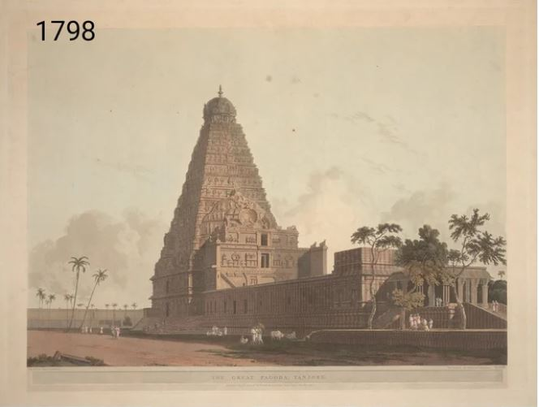

The Great Living Chola Temples is a UNESCO World Heritage Site designation for a group of Chola dynasty era Hindu temples in the Indian state of Tamil Nadu.Completed between early 11th and the 12th century CE, the monuments include Brihadisvara Temple at Thanjavur
Brihadisvara Temple in Thanjavur
The Brihadisvara Temple at Thanjavur is a Hindu temple dedicated to Shiva. It is one of the largest South Indian temples and an exemplary example of fully realized Tamil architecture. Built by Raja Raja Chola I between 1003 and 1010 AD. The original monuments of this 11th century temple were built around a moat. It included gopura, the main temple, its massive tower, inscriptions, frescoes and sculptures predominantly related to Shaivism, but also of Vaishnvaism and Shaktism traditions of Hinduism. The temple was damaged in its history and some artwork is now missing. Additional mandapam and monuments were added in centuries that followed. The temple now stands amidst fortified walls that were added after the 16th century.

Built out of granite, the vimanam tower above the sanctum is one of the tallest in South India. The temple has a massive colonnaded prakara (corridor) and one of the largest Shiva linga in India. It is also famed for the quality of its sculpture, as well as being the location that commissioned the brass Nataraja-Shiva as the lord of dance, in 11th century. The complex includes shrines for Nandi, Amman, Subrahmanyar, Ganesha, Sabhapati, Dakshinamurti, Chandesrvarar, Varahi and others. The temple is one of the most visited tourist attractions in Tamil Nadu.
Brihadisvara Temple in Gangaikonda Cholapuram
The Brihadisvara Temple at Gangaikonda Cholapuram is a Hindu temple located at Gangaikonda Cholapuram about 70 kilometres (43 mi) from the Thanjavur Brihadisvara Temple. Completed in 1035 AD by Rajendra Chola I as a part of his new capital, this Chola dynasty era temple is similar in design and has a similar name as the 11th century, and sometimes just called the Gangaikondacholapuram temple.
Airavatesvara Temple
The Airavatesvara Temple is in the city of Kumbakonam, South India, completed in 1166 AD. It is one among a cluster of eighteen medieval era large Hindu temples in the Kumbakonam area. The temple is dedicated to Lord Shiva. It also reverentially displays Vaishnavism and Shaktism traditions of Hinduism, along with the legends associated with sixty three Nayanars-the Bhakti movement saints of Shaivism.